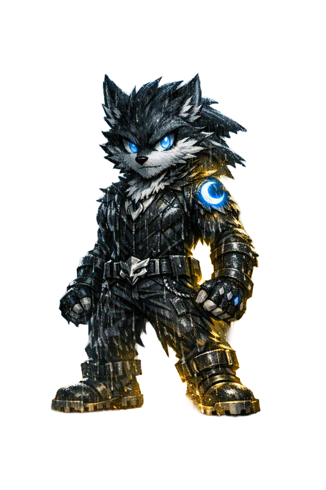

Lykos began life as a human baby, born to a family who never knew the destiny their son carried. But one night, everything changed.
A pack of Vargans — corrupted wolves loyal to the fallen Lycan known as Vargan — attacked his home. They destroyed everything, leaving the infant alone in the forest beneath the cold moonlight.
But fate refused to let his story end there.
The noble Lycans — an ancient lineage bound by prophecy — found the crying child. The moment they approached, they felt something radiating from him: a presence, a calling, a destiny.
Believing he was the human-born Guardian foretold in their legends, they performed a sacred rite. That night, they placed the Mark of the Beast upon him.
The crescent-shaped mark glowed faintly on his skin, pulsing with lunar energy. It was not a curse. It was a seal of destiny — a promise that one day, the power within him would awaken.
The Lycans raised Lykos as one of their own. He learned to run with the pack, to hunt, to survive, and to understand the unbreakable bond of family — a bond the Vargans had tried to steal from him.
Yet even as he grew stronger, he felt the pull of something deeper — a destiny waiting for the right moment to awaken.
On the night of his 18th birthday, under a full moon, the Mark of the Beast ignited. The prophecy finally awakened.
His human body dissolved into moonlight. His bones shifted. His senses sharpened. And the wolf within him — the Guardian he was destined to become — emerged.
Lykos became the first human-born Lycan Guardian, the bridge between two worlds, and the protector the Lycans had waited generations for.
Long before Lykos, there was another Chosen One — Vargan. He was everything Lykos would one day become: strong, gifted, destined for greatness.
But the Lycans saw something in him they could not ignore — a growing hunger for power, a darkness creeping into his heart. When they refused to grant him the Golden Crescent — the artifact said to grant a Lycan ultimate power — Vargan broke.
Rage consumed him. Hate twisted him. And the Chosen One became the Fallen One.
He slaughtered those who raised him, formed the corrupted Vargans, and began his hunt for the Golden Crescent, leaving destruction in his wake — including the night he murdered Lykos’s human family.
Lykos’s destiny was written long before he could walk. The Lycans marked him because they believed he would one day stand against the darkness — including Vargan, the fallen Chosen One who seeks the Golden Crescent.
Their paths will cross again. And when they do, Lykos will not face him as a child of tragedy, but as the Guardian he was born to become.
He is the face of Code‑X because he represents everything Code‑X stands for: rising from tragedy, surviving the impossible, growing into strength, and fulfilling the destiny you were born for.